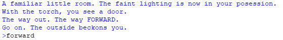

project -

in 7th grade, our school's computer club hosted a python game jam after teaching us some basic things like the random module and for loops.
a lot of the other guys in club made things like gambling simulators/rock paper scissors/things like that, because the random module
was great for making game mechanics and rng games didn't need too much time invested. meanwhile, i decided to spend 4 hours of time that i could
have used for study and getting ahead typing out a goofy text adventure that i realized was just a bad copy of the plot of "the city of ember" way too late.
i'm pretty sure it was a success, because people liked it and i became club secretary in the next year.
i think my execution for the actual text adventure bit was pretty good. it had the generic fat if-elif tree (because i didn't know about anything else,
and i'll probably be using json/spreadsheet next time), a dictionary of gameplay flags, inventory system with item collection and consumption, and a map bit that i never finished.
instead of a regular if-else tree, i decided to be reasonable and made it into a function that instead runs all the code for a specific room/location, and then uses a separate query function
that is bundled with common commands like "inventory" and "map" to get the player command, which is taken and interpreted. when the room is changed, the location function
just calls itself with the new room id as its argument. i added enough comments for it to be readable though (i wrote those a while ago so they'll sound different than how i do now).
i also tried making a godot port (shown in the project thumbnail) but halfway through the first set of rooms, i realized i had zero narrative writing ability.
i have no clue how to get the file embedded here so you can play on this website but i'll do that once i figure it out